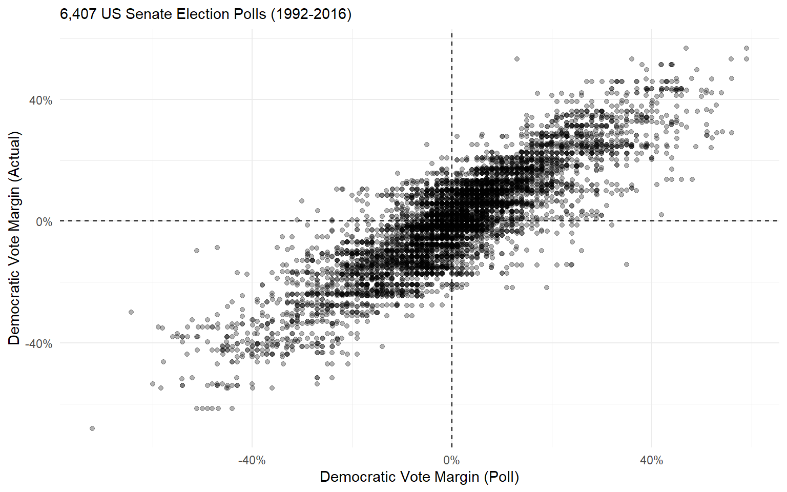
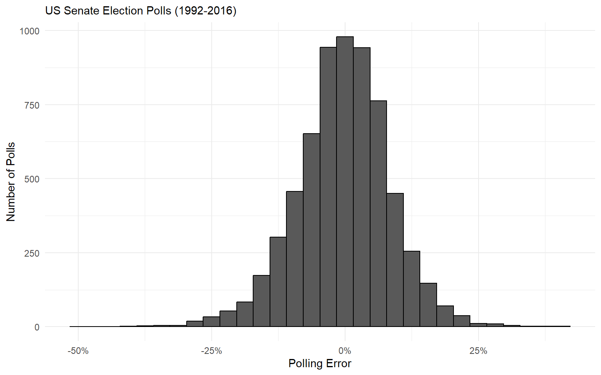
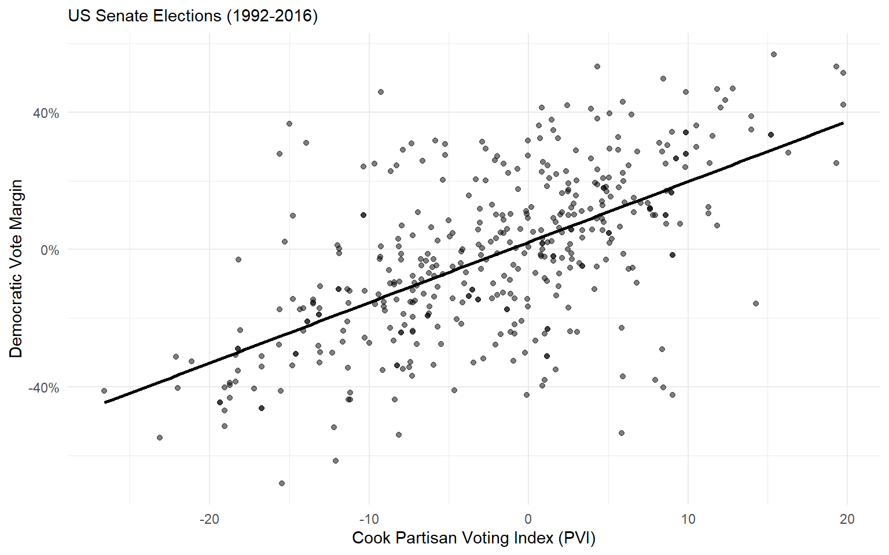
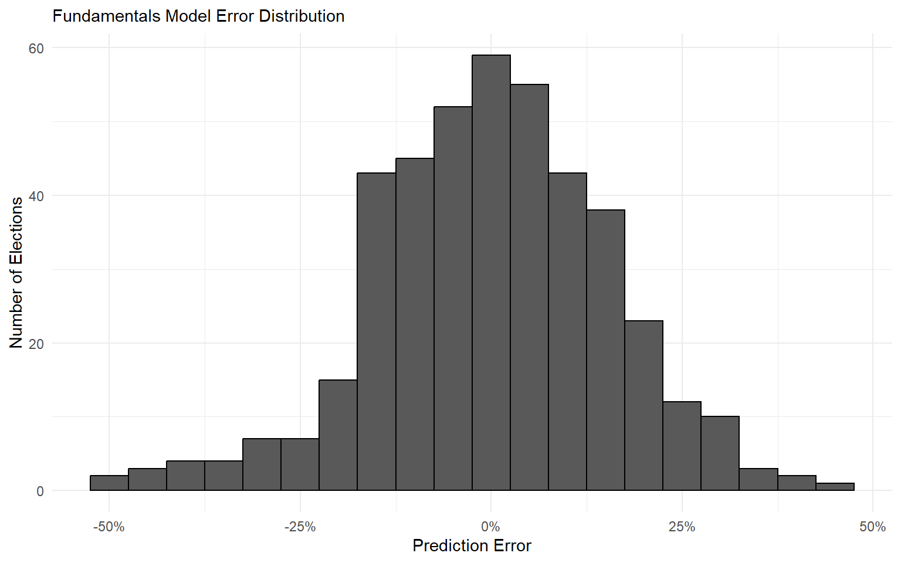
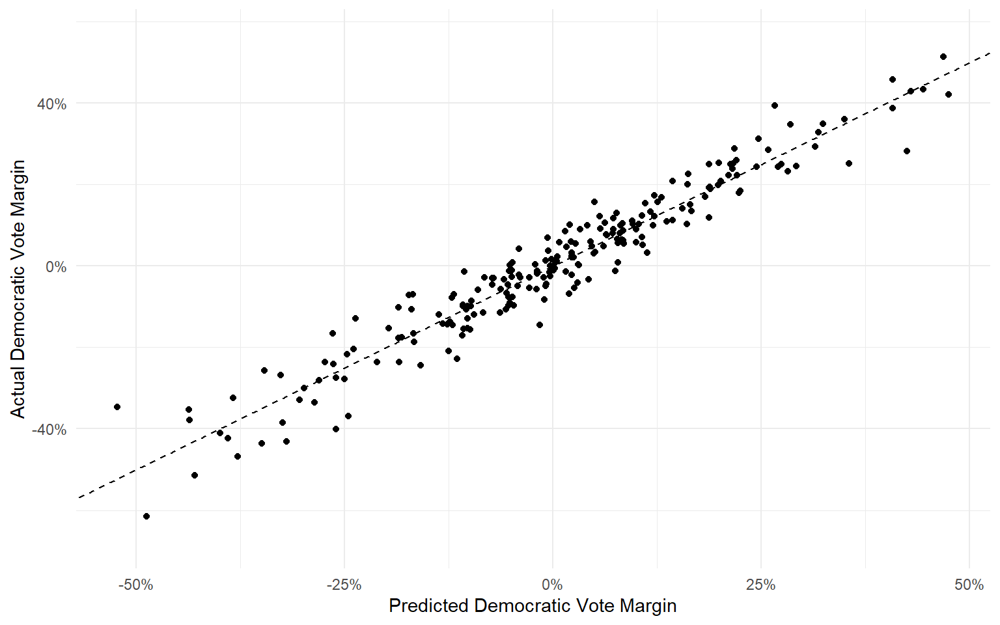
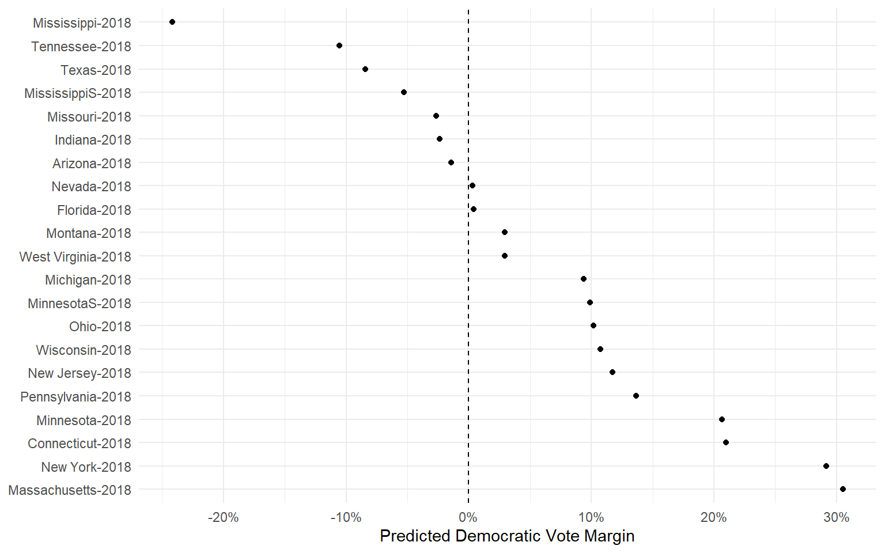
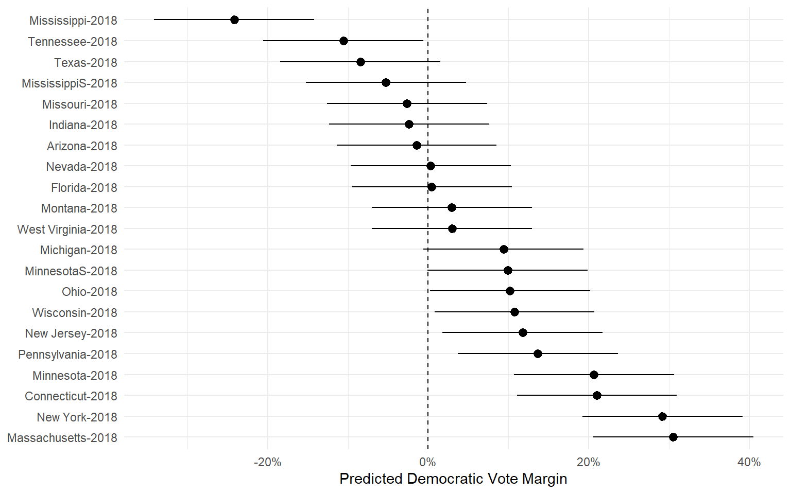
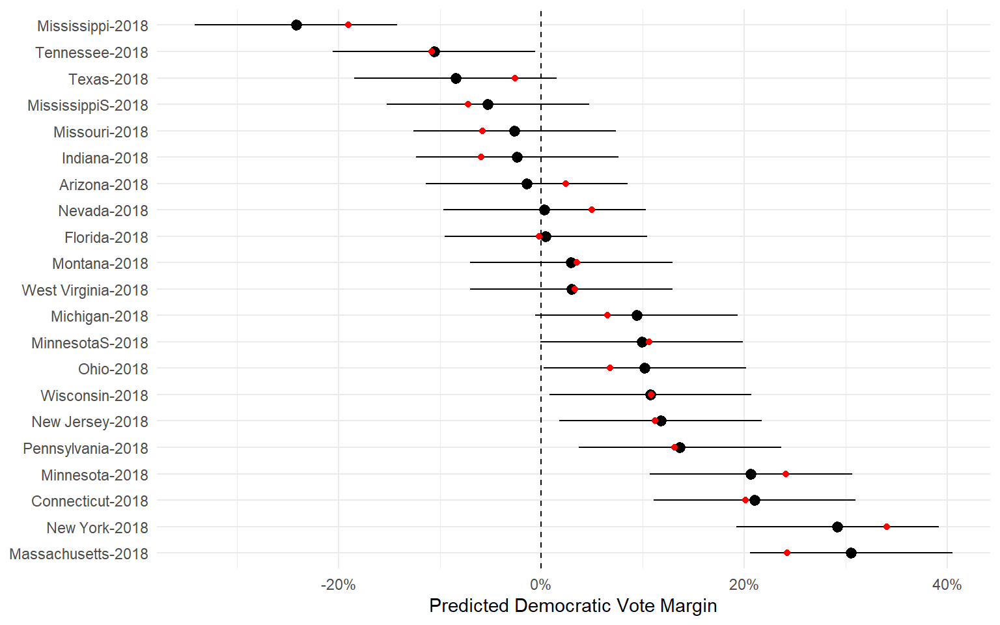

Election Forecasting
POLS 3220: How to Predict the Future
Today’s Agenda
Today, we’ll develop a model to predict the outcome of US Senate elections.
This is a tough forecasting problem compared to presidential elections, for two reasons:
Relatively few polls
“Fundamentals” are weakly predictive
Combining polls + fundamentals will yield much better predictions than either alone!
Approach 1: Polls Only
Approach 1: Polls Only
Between 1992 and 2016, polls “called” the correct candidate 79.7% of the time.
And polling error is quite high! The average poll was off by 6.75 percentage points.
Of course, we expect that there will be some error in polling.
- Think back to our lecture on Bell Curves. Polling error should look like a normal distribution.
Approach 1: Polls Only

Approach 1: Polls Only
The problem is that polling error is much wider than the Central Limit Theorem would predict!
Recall: a poll’s margin of error is the range within which one can be 95% confident the polling error will fall.
Back-of-the-envelope approximation of a poll’s margin of error is \(\frac{100\%}{\sqrt{n}}\)
In this dataset of 6,407 polls, the result only fell within the margin of error 3,119 times.
- That’s 48.7% confidence, not 95%!
Approach 1: Polls Only
For most polls, the margin of error gives us a false sense of security.
Real-world polling is much more volatile than theory would predict.
Many different reasons why:
- Non-response bias
- People change their minds
- People lie
Approach 2: Fundamentals Only
Maybe a fundamentals model will work better?
The problem here is a lack of good data.
For example, there’s no dataset on “Senator approval” like there was on presidential approval
But there are still some useful predictor variables we can include:
- The Cook Political Report’s measure of a state’s partisan lean.
- Whether each Senate candidate has previous political experience (Carson et al. 2010).
Approach 2: Fundamentals Only

Approach 2: Fundamentals
The fundamentals model is off by 12.05 percentage points on average. Even worse than the polls!

Approach 3: Polls + Fundamentals
A polls-only approach had way higher error than we would expect from the Central Limit Theorem.
The fundamentals-only approach was weak sauce.
What if we combined the two?
Our final approach: use both polls and fundamentals as predictor variables in a linear model.
Approach 3: Polls + Fundamentals
Predictor variables include:
Cook Partisan Voting Index (PVI)
Whether the Democratic candidate has previous political experience (1 if yes, 0 if no).
Whether the Republican candidate has previous political experience (1 if yes, 0 if no).
The average vote margin in polls conducted within 1 month of the election.
Approach 3: Polls + Fundamentals
| (1) | |
|---|---|
| (Intercept) | -0.012 |
| polling_average | 0.911 |
| pvi | 0.004 |
| dem_experienced | 0.012 |
| rep_experienced | 0.001 |
| Num.Obs. | 223 |
Approach 3: Polls + Fundamentals

Approach 3: Polls + Fundamentals
The combined model has an average error of 3.88 percentage points.
It correctly calls the winner in 91.9% of elections from 1992-2016.
But the true test of the model is whether it can accurately forecast out-of-sample.
- The model was fit using 1992-2016 election data. Can we use the same model to predict the outcomes in 2018?
Out-of-Sample Prediction

Out-of-Sample Prediction

Out-of-Sample Prediction

Out-of-Sample Prediction
The polls + fundamentals model correctly predicted all but two of the 2018 Senate elections, with an average error of 2.55 percentage points.
By comparison, if you had been looking at the polls alone, you would have incorrectly called three elections.
- In Missouri 2018, the polls narrowly favored the Democratic incumbent, but the fundamentals were skeptical.
Takeaways
It’s somewhat surprising that combining two terrible models (polls: 6.7% error, fundamentals: 12% error) yields a pretty good model (polls + fundamentals: 3.8% error)!
But it follows the basic logic of the wisdom of crowds.
Both polls and fundamentals provide an imperfect glimpse at the state of a race.
Combining the two perspectives yields a better forecast than either alone (Chen, Garnett, and Montgomery 2023).
References
Carson, Jamie, Gregory Koger, Matthew J. Lebo, Jamie L, and Matthew J. Lebo. 2010. “The Electoral Costs of Party Loyalty in Congress.” American Journal of Political Science, 598616.
Chen, Yehu, Roman Garnett, and Jacob M. Montgomery. 2023. “Polls, Context, and Time: A Dynamic Hierarchical Bayesian Forecasting Model for US Senate Elections.” Political Analysis 31 (1): 113–33. https://doi.org/10.1017/pan.2021.42.